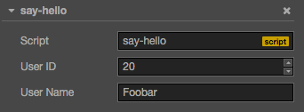

属性声明
通过在组件脚本中声明属性，我们可以将脚本组件中的字段可视化地展示在 属性检查器 中，从而方便 地在场景中调整属性值。
要声明属性，仅需要在 cc.Class 定义的 properties 字段中，填写属性名字和属性参数即可，如：
cc.Class({
extends: cc.Component,
properties: {
userID: 20,
userName: 'Foobar'
}
});这时候，你可以在 属性检查器 中看到，你刚刚定义的两个属性，显示在检查器的面板中：

声明方法
在 Cocos Creator 中，我们提供两种形式的属性声明方法：
简单声明
在多数情况下，我们都可以使用简单声明。当声明属性的类型为 Javascript 内建类型 boolean，
string 和 number 时，可以直接书写成：
properties: {
foo: 20,
bar: 'Hello World!',
foobar: false,
}当声明属性的类型继承自 cc.ValueType 时（如： cc.Vec2，cc.Color，cc.Size 等），
可以赋值他们的实例，如：
properties: {
foo: new cc.Vec2(10,20),
bar: new cc.Color(255, 255, 255, 128),
}当声明属性的类型继承自 cc.Class 时（如：cc.Node，cc.Component 等），可以在声明处
填写他们的 constructor 来完成声明，如：
properties: {
foo: cc.Node,
bar: cc.Sprite,
}注意: 除了以上几种情况，其他类型（如：数组）我们都需要使用完整声明的方式来进行书写。
完整声明
有些情况下，我们需要为属性声明添加参数，这些参数控制了属性在 属性检查器 中的显示方式，以及 属性在场景序列化过程中的行为。例如：
properties: {
score: {
default: 0,
displayName: 'Score (player)',
tooltip: 'The score of player',
}
}以上代码规定了 score 在 属性检查器 里，其属性名将显示为：“Score (player)”， 并且当鼠标移到参数上时，显示对应的 Tooltip。
下面是常用参数，详细用法请参阅属性参数。
- default: 设置属性的默认值
- type: 限定属性的数据类型
- visible: 设为 false 则不在 Inspector 面板中显示该属性
- serializable: 设为 false 则不序列化该属性
- displayName: 在 Inspector 面板中显示成指定名字
- tooltip: 在 Inspector 面板中添加属性的 Tooltip
特殊类型的声明方法
数组声明
数组的 default 必须设置为 []，如果要在 属性检查器 中编辑，还需要设置 type 为构造函数，枚举，
或者 'Integer'，'Float'，'Boolean' 和 'String'。
properties: {
names: {
default: [],
type: ['String']
},
enemies: {
default: [],
type: [cc.Node]
},
}get/set 声明
在属性中设置了 get 或 set 以后，访问属性的时候，就能触发预定义的 get 或 set 方法。定义方法如下：
properties: {
width: {
get: function () {
return this._width;
},
set: function (value) {
this._width = value;
}
}
}注意: 你可以只定义 get 方法，这样相当于一份 readonly 的属性。
更多的属性参数，请阅读属性参数
继续前往 访问节点和其他组件。